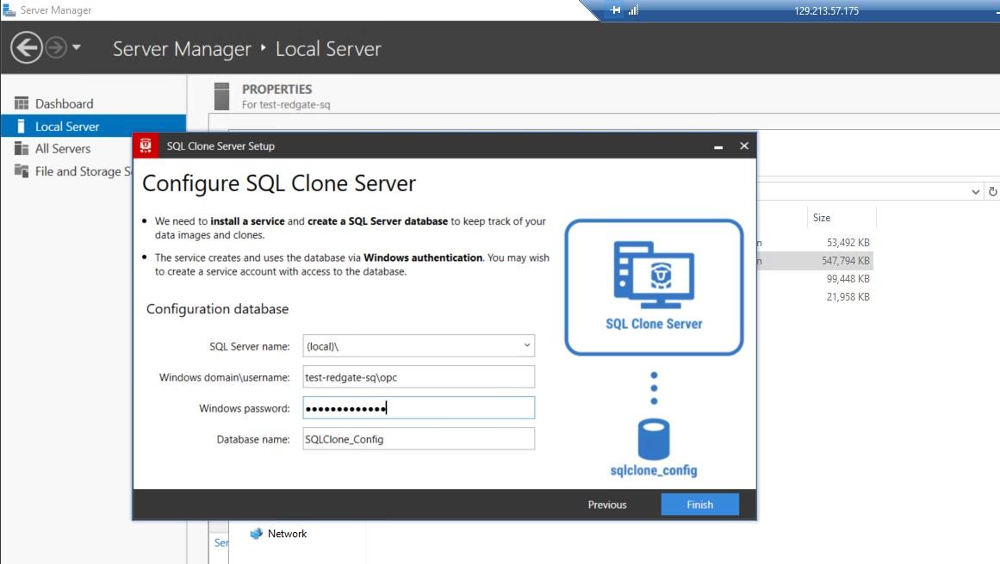
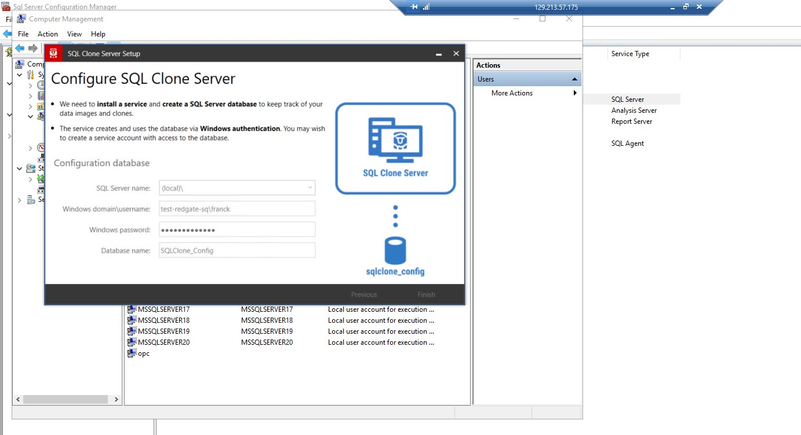
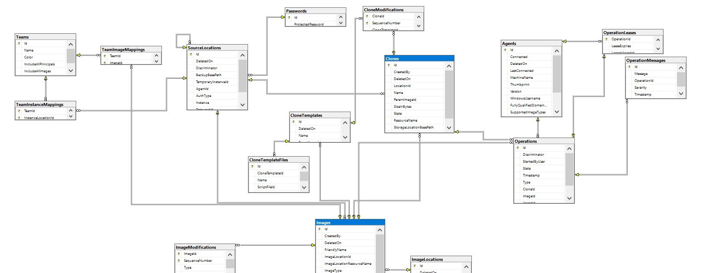
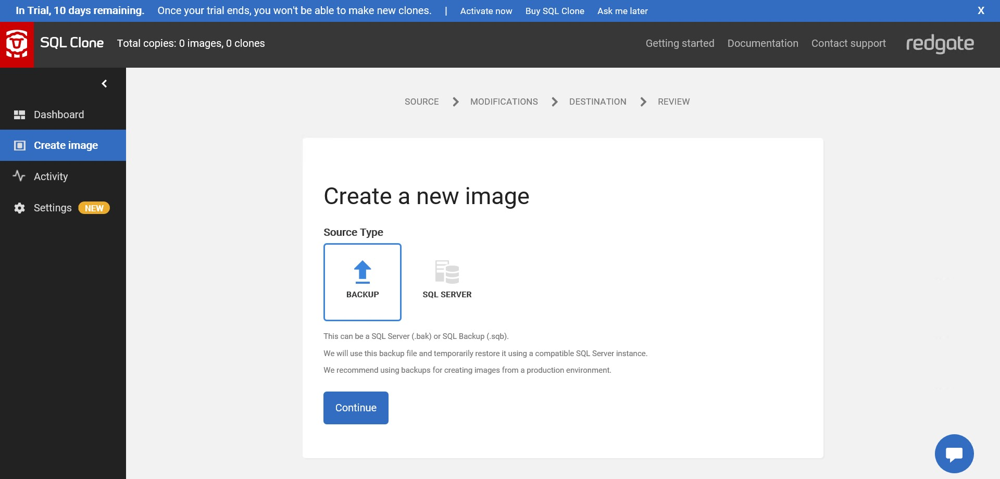

This was first published on https://www.dbi-services.com/blog/data-virtualization-on-sql-server-with-redgate-sql-clone/ (2020-08-25)
Republishing here for new followers. The content is related to the versions available at the publication date.
.
In the previous blog post I’ve installed SQL Server on the Oracle Cloud. My goal was actually to have a look at Redgate SQL Clone, a product that automates thin cloning. The SQL Server from the Oracle marketplace is ok for SQL Clone prerequisites. There’s a little difference in .NET Framework version (I have 4.6 where 4.7.2 or later is required but that’s fine – if it was not an update would be easy anyway).
I’ve downloaded Redgate SQL Clone (14 days trial) and installed it. It requires a logon that you can create easily. Of course, you provide an e-mail, and when you use the trial, someone from Business Development will contact you to know your feedback and what your project is. No problem, I have already very good contacts at Redgate even if I’m not working with SQL Server very often. Look at their roadmap if you are interested by other databases 😉
I must say that the installation and usage of SQL Clone is very easy and straightforward. I like to test software without reading any installation or user guide. The only issue I had was the impossibility to configure the SQL Clone Server (which create the services and the repository) without creating a new user:  
This doesn’t work: I cannot use the OPC user I’m connected with. I had to create another one:
The installation needs repository which will be stored on SQL Server (the default name for the database is SQLClone_Config) and here is its schema – the main entities are Images and Clones 
I have downloaded AdventureWorks datawarehouse (from microsoft.com) then I have the backup file as C:\Users\opc\Downloads\AdventureWorksDW2019.bak which I’ll need to move (to C:temp in my lab) services running with another user cannot access there. 
An image is like a detached database, or an online backup that is taken by an external tool. Think of it like the set of .mdf with the current data – committed or uncommited – and .ldf with the ongoing transaction to rollback on open. Redgate SQL Clone is not hacking anything and will not read the .bck file to rebuild the database files. This is the job of the SQL Server restore function and you don’t want to mess-up with restores and risk corruption by reading proprietary binary format. Then, SQL Clone will use a SQL Server instance to get the image from the backup file. You need to mention a SQL Server instance that can access the .bck (and compatible to restore it) and it will restore it, take an image and destroy this temporary database.
Here is an extract from what happened:
Database was restored: Database: SqlCloneTemp_yx2xf0hn, creation date(time): 2017/10/20(10:56:55), first LSN: 38:370:75, last LSN: 38:406:1, number of dump devices: 1, device information: (FILE=1, TYPE=DISK: {'C:\temp\AdventureWorksDW2016.bak'}). Informational message. No user action required.
RESTORE DATABASE successfully processed 12139 pages in 1.202 seconds (78.893 MB/sec).
Starting up database 'SqlCloneTemp_yx2xf0hn'.
Restore is complete on database 'SqlCloneTemp_yx2xf0hn'. The database is now available.
Setting database option OFFLINE to ON for database 'SqlCloneTemp_yx2xf0hn'.This proves that the backup is restored and then the image is taken from there.
I’ve named my image ‘MYIMAGE01’ and in the directory I mentioned (UNC path in case you want to share it remotely) I have now a myimage01_00010006_1qp folder. It contains a ‘vhd’ file. The VHD format is a disk image, Virtual Hard Drive, which can be attached to an Hyper-V virtual machine. But to look inside it I simply used 7-zip.
In this VHD I find:
{"agentVersion":"4.4.41.24276","data":{"originalDatabaseName":"AdventureWorksDW2016","rowDataFiles":["AdventureWorksDW2016_Data.mdf"],"logDataFiles":["AdventureWorksDW2016_Log.ldf"],"filestreamFiles":[]}}
This is medatada describing what is in the image.
And a ‘Data’ subdirectory that contains the database files:
08/25/2020 03:22 PM 178,257,920 AdventureWorksDW2016_Data.mdf
08/25/2020 03:22 PM 2,097,152 AdventureWorksDW2016_Log.ldf
So here is what a SQL Clone image contains: a base Virtual Hard Drive containing an online backup, ready to be attached to a database instance as a new database clone.
I did this from a backup but we can, of course, create an image from an existing database, and we will see that later. But when you want to be sure that you have no overhead and side effects on the production database, taking an image from the last backup is the right solution. And, it has this awesome advantage that at the same time you validate that you can recover from your backups.
Of course I can extract those .mdf and .ldf with 7-zip, or a drive in a VM, and attach them as a new database. But that’s not the goal. The idea is that I can have many clones from this image, without additional storage. Then I must keep it read-only and make snapshots from it.
The goal of taking an image from production is to create a clone of this database into a test environment. Many clones actually. We have seen that the image contains the .mdf and .ldf and this is sufficient to restore and recover the database so that we can open a clone at the point in time where the image was taken (or the backup in my case). That’s easy from the SQL Clone GUI, you just select an image and the SQL Server destination instance. I’m using the same instance that I used to create the image from the backup here, but it can be another as long as it has access to the image.
Here is what I find in my database directory once I clned my image to MyClone01:
C:\Program Files\Microsoft SQL Server\MSSQL13.MSSQLSERVER\MSSQL\DATA\clones
DATA is my default database directory and I can see a ‘clones’ subdirectory
What do I find there?
C:\Program Files\Microsoft SQL Server\MSSQL13.MSSQLSERVER\MSSQL\DATA\clones\myclone01_00010004_y52>dir
Volume in drive C is Windows
Volume Serial Number is EA6E-42AC
Directory of C:\Program Files\Microsoft SQL Server\MSSQL13.MSSQLSERVER\MSSQL\DATA\clones\myclone01_00010004_y52
08/25/2020 03:53 PM .
08/25/2020 03:53 PM ..
08/25/2020 03:53 PM 46,149,632 disk.vhd
08/25/2020 03:53 PM SqlClone_VhdMount [\??\Volume{f074fa67-0000-0000-0000-010000000000}\]
1 File(s) 46,149,632 bytes
3 Dir(s) 120,786,231,296 bytes free
My image VHD is mounted there (SqlClone_VhdMount) and can be seen as a full virtual database. I can have many clones from the same image and they will not take any space because they share the same mount in read-only. And the ‘disk.vhd’ file will contain the modified blocks only, like an Hyper-V snapshot. It is really small when created. Then any writes on this virtual database will fill this file with the new version of the block. This is how thin provisioning works here, exactly like a VM snapshot. Each developer has its own virtual database, but we save a lot of storage by sharing the base image. Of course if the developer modifies all data, this saving is lost. The idea is to create small clones (this is fast as it is just a mount operation) for short tests.
I mentioned that we can take an image from any existing database, and I’m even doing that from the clone I’ve just created. Note that in SQL Server you can do that even in the Simple Recovery Model (the equivalent of noarchivelog mode in Oracle) and that’s very nice because you don’t want the overhead of protecting for media recovery in a test database. Here is what happened in the database when I created the image:
I/O is frozen on database MyClone01. No user action is required. However, if I/O is not resumed promptly, you could cancel the backup.
I/O was resumed on database MyClone01. No user action is required.
Database backed up. Database: MyClone01, creation date(time): 2020/08/25(15:53:19), pages dumped: 12154, first LSN: 38:665:49, last LSN: 38:686:1, number of dump devices: 1, device information: (FILE=1, TYPE=VIRTUAL_DEVICE: {'{DF474E86-8BC0-437A-BF58-822449CB364C}1'}). This is an informational message only. No user action is required.
BACKUP DATABASE successfully processed 0 pages in 0.390 seconds (0.000 MB/sec).This is an online database backup, with a call to VSS for the duration it needs to freeze a snapshot. That’s the reason why I prefer to take the image from a backup. But if you already take backups with VSS Snapshot Copy, then there’s nothing more here and you can take an image from the production database. You can also create the image from the standby database.
As with any third-party backup, it reads the .mdf and .ldf and builds the image (VHD) from them.
Note that even if the source was already a clone in this case, the whole content was read by this backup (without caring about what comes from the image VHD and was from the local differences in ‘disk.vhd’). In the current version of SQL Clone, there is no possibility to have an image that references a parent image. This also means that if you backup your test instance with many clones from the same image, the storage gain will be lost in the backup as they are seen as different databases. Except if you store those backup in a Data Domain with deduplication of course. I didn’t test it (yet?) but it should be possible to backup the test environment, by taking only the local ‘disk.vhd’ and ensure that the referenced image is accessible.
The GUI is very simple and easy. I love those tools that make one thing and do it well. The dashboard shows the images, by source, or by location and the clones you have in each instance.
I didn’t mention all features here: you can do some post-processing on your clone because you often need to clean passwords, anonymize some data, and have some data masking applied before opening to the developers. And of course, you can automate all that with a simple API.
{kind=link}
{kind=link}
{kind=link}
{kind=link}
{kind=link}